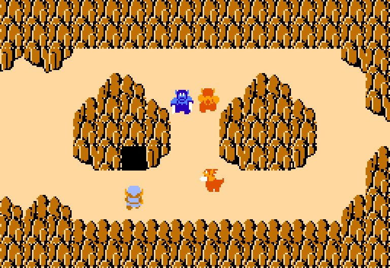
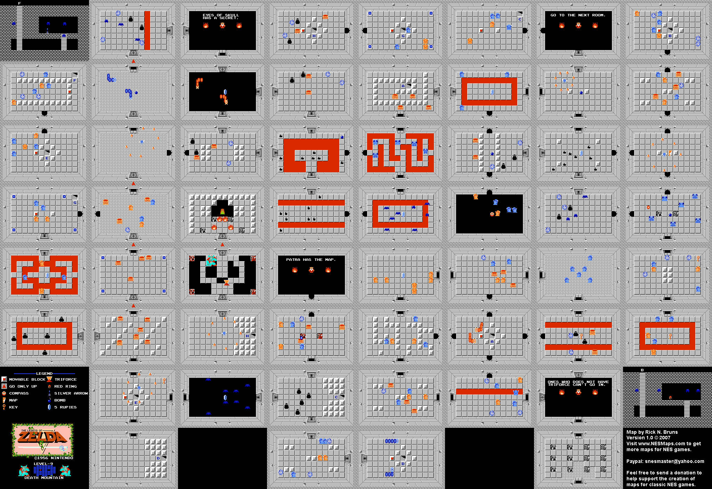
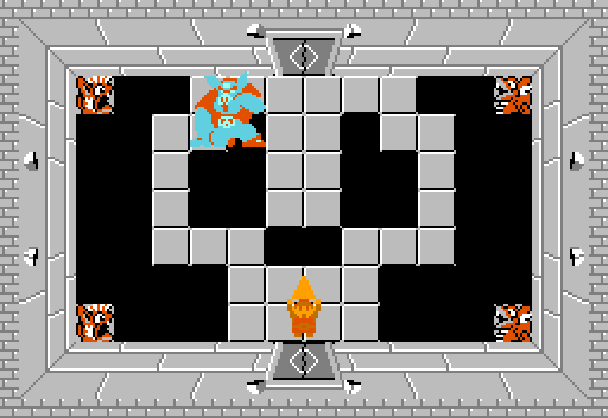
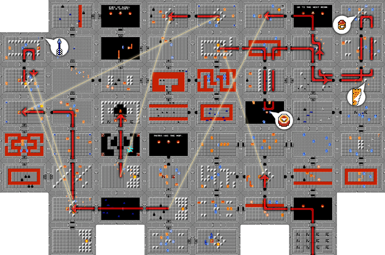

Location and How to Get There
This level is found inside Spectacle Rock.
You need to bomb the entrance to uncover it.
{kind=link}

The Layout
The final level is shaped like a Skull.
This is the largest level in the entire game by far, it has many hidden passages, some of them serving no purpose other than making you go in circles, and getting you lost.
The boss is found inside the left eye socket of the skull.
{kind=link}

Key Items
{kind=link}
{kind=link}
The Boss, Ganon
The final boss of the game, and the villain of the Zelda series.
This fight is pretty tough, Ganon turns invisible, moves around in a weird pattern, and shoots fireballs at you, which deal a lot of damage.
You need to keep hitting him while invisible.
Once you hit him with your sword enough he gets stunned.
You need to finish him off with a Silver Arrow.
{kind=link}

Difficulty
10/10 This level is very difficult, being fitting for the final challenge of the game.
The layout is very confusing, and the enemies are very tough too.
You need to pay a lot of attention on what room you want to go next, a lot of the paths you can take are traps, which take you back to the start.
For reference on this image you can see the most optimal path you can take if you have the Magical Key unlocked.
{kind=link}

My Rating
8/10. A pretty good final challenge, sometimes it can feel too much though.
I like the gray color scheme mixed with lava.
Beating this level without a guide makes you a true veteran at this game.